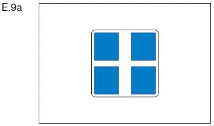
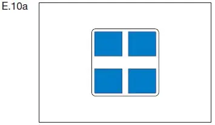
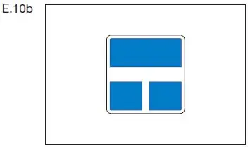
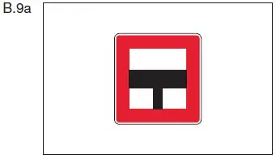
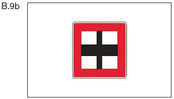
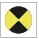

§ 6.16 Überqueren der Wasserstraße; Einfahrt in und Ausfahrt aus Häfen und Nebenwasserstraßen
Binnenschifffahrtsstraßen-Ordnung
1. Ein Fahrzeug darf
a) aus einem Hafen oder einer Nebenwasserstraße nur ausfahren und in die Hauptwasserstraße einbiegen,
b) die Hauptwasserstraße überqueren oder
c) in einen Hafen oder eine Nebenwasserstraße nur einfahren,
nachdem es sich vergewissert hat, dass das Manöver ausgeführt werden kann, ohne dass eine Gefahr entsteht und ohne dass ein anderes Fahrzeug unvermittelt seinen Kurs oder seine Geschwindigkeit ändern muss. Ein Talfahrer, der zur Einfahrt in einen Hafen oder in eine Nebenwasserstraße aufdrehen muss, hat einem Bergfahrer, der ebenfalls einfahren will, die Vorfahrt zu lassen. Eine Wasserstraße, die als Nebenwasserstraße zu betrachten ist, kann durch ein Tafelzeichen E.9 oder E.10 (Anlage 7) gekennzeichnet sein.
Die benutzte Hauptwasserstraße trifft auf eine von beiden Seiten einmündende Nebenwasserstraße. |  |
Die benutzte Hauptwasserstraße trifft auf eine von Steuerbord einmündende Nebenwasserstraße. | E.9b |
 | |
Die benutzte Hauptwasserstraße trifft auf eine von Backbord einmündende Nebenwasserstraße. | E.9c |
Die benutzte Nebenwasserstraße trifft auf eine von beiden Seiten einmündende Hauptwasserstraße. |  |
Die benutzte Nebenwasserstraße mündet in eine Hauptwasserstraße ein. |  |
2. Ein Fahrzeug – ausgenommen eine Fähre –, das ein Manöver im Sinne der Nummer 1 beabsichtigt, das ein anderes Fahrzeug dazu zwingt oder zwingen kann, seinen Kurs oder seine Geschwindigkeit zu ändern, muss seine Absicht rechtzeitig wie folgt ankündigen:
a) durch „drei lange Töne, einen kurzen Ton“, wenn es vor der Einfahrt oder nach der Ausfahrt seinen Kurs nach Steuerbord richten will;
b) durch „drei lange Töne, zwei kurze Töne“, wenn es vor der Einfahrt oder nach der Ausfahrt seinen Kurs nach Backbord richten will;
c) durch „drei lange Töne“, wenn es nach der Ausfahrt die Wasserstraße überqueren will; will es vor Beendigung der Querfahrt seine Richtung ändern, muss es geben:
aa) „einen langen Ton, einen kurzen Ton“, wenn es seinen Kurs nach Steuerbord richten will;
bb) „einen langen Ton, zwei kurze Töne“, wenn es seinen Kurs nach Backbord richten will.
Das andere Fahrzeug muss daraufhin, soweit notwendig, seinen Kurs und seine Geschwindigkeit ändern.
3. Ist an der Ausfahrt eines Hafens oder an der Mündung einer Nebenwasserstraße ein Tafelzeichen B.9a oder B.9b (Anlage 7) angebracht, darf ein aus dem Hafen oder aus der Nebenwasserstraße kommendes Fahrzeug in die Hauptwasserstraße nur einbiegen oder sie überqueren, wenn dadurch ein Fahrzeug auf der Hauptwasserstraße nicht gezwungen wird, seinen Kurs oder seine Geschwindigkeit zu ändern.
 |  |
4.
Ein rotes Licht, Zeichen A.1 (Anlage 7), mit einem weißen Pfeil (Abschnitt II Nummer 2 Buchstabe c der Anlage 7) zeigt an, dass die Einfahrt in den in Pfeilrichtung gelegenen Hafen oder in die in Pfeilrichtung gelegene Nebenwasserstraße verboten ist. | A.1 Abschnitt II Nr. 2 Buchstabe c |
5.
Ein gelbes Funkellicht (Zeichen E.12a der Anlage 7) an einer Hafenmündung oder der Mündung einer Nebenwasserstraße zeigt an, dass ein Fahrzeug ausfährt und die Einfahrt infolgedessen mit Vorsicht zu erfolgen hat. Ein Fahrzeug in der Hauptwasserstraße muss daraufhin, soweit notwendig, seinen Kurs und seine Geschwindigkeit ändern. | E.12a |  |
6. Werden die Zeichen nach den Nummern 4 und 5 nicht gegeben, darf in eine Nebenwasserstraße oder einen Hafen, deren oder dessen Mündung für eine gleichzeitige Einfahrt und Ausfahrt nicht ausreichend Platz bietet, erst eingefahren werden, wenn kein Fahrzeug ausfährt.